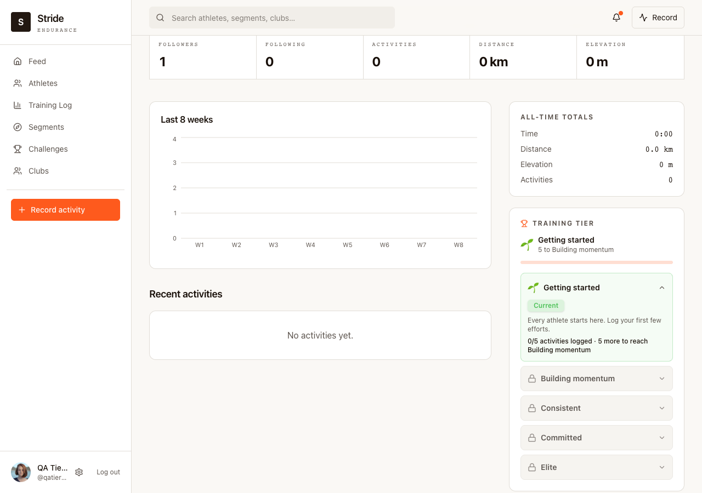
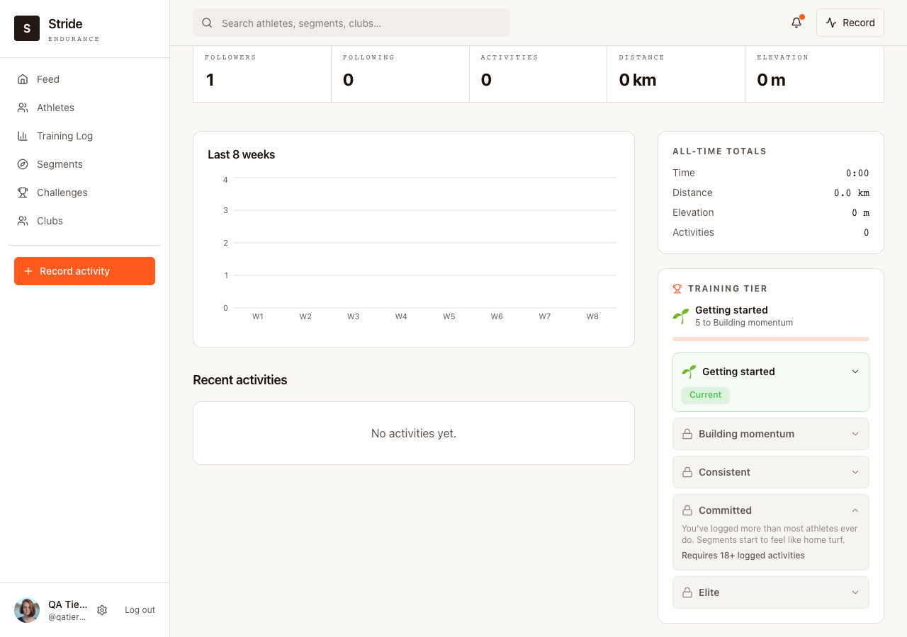

Week 3: Ship your feature
Ship review · Stride training tiers
The prototype was mock data and three placements to compare. What shipped is one of them, wired to a real database, plus a bug I introduced and caught before a human reviewer had to.
Continuity from Week 2
Same feature as the Week 2 prototype review: a cumulative tier ladder replacing the athlete profile's static Trophy Case, targeting the retained-but-under-logging segment from Week 1. This page covers what changed getting it into the real app.
Signed in as a real account with zero real activities, against the live Postgres database, not the mock sandbox.
Demo clip: signing in, landing on the real athlete profile, expanding a locked tier, all against the live database.

Default state, real account: 0 real activities, Getting started, 0/5 to Building momentum. Matches what we predicted from the prototype, now confirmed for real.

Locked tier expanded: same interaction as the prototype. The thin bar under "Getting started" is the design system's actual Progress component now, swapped in during self-review, see below.
The prototype answered a design question: which placement, and does the idea make sense at all. Shipping meant making it real, which turned out to be a different set of problems entirely.
| Prototyped | Shipped |
|---|---|
| 3 placements to compare (sidebar card, header chip, inline ladder) | Sidebar card only. Which one to actually keep was still an open question going into this week, not one I resolved, see "what I'd cut" below. |
| Mock data, in-memory array, resets on every reload | Real Postgres. Tier count comes from an actual COUNT(*) query, added this week, not something that existed before. |
| No auth, anyone could open the sandbox URL | Existing session/bootstrap auth, unmodified. Nothing new needed here, it came for free from the app's existing flow. |
| Zero analytics | 3 new PostHog events (tier_viewed, tier_row_expanded, activities_load_more), matching the file's existing capture pattern |
| Tier thresholds picked to look reasonable in a demo | Unchanged. Still illustrative, not derived from real logging-frequency data. Shipping didn't validate this, it just made the number real. |
| No test coverage of any kind | 11 tests on the pure tier math, 8 more on the query logic after self-review, the first server-side tests in this repo |
A bug I introduced, then caught
Wiring up the real query meant fixing an actual bug: the tier count was computed from however many activities happened to be loaded on screen, not the athlete's real total. Pagination meant the tier could under-report and then jump when someone clicked "load more."
The fix I wrote had its own bug. I added a fallback, totalCount ?? activities.length, meant to guard against a malformed API response. What it actually did was silently reintroduce the exact bug I'd just fixed, with zero error or log, the moment that fallback ever fired. It would have looked fine in every normal case and quietly gone wrong in exactly the case I was trying to prevent.
I only caught it by running a structured self-review against the diff before asking for a human reviewer, which is the part worth remembering: the fix for a silent-failure bug can itself fail silently, and it takes a second, deliberate pass to catch that, not just testing the happy path.
Still open